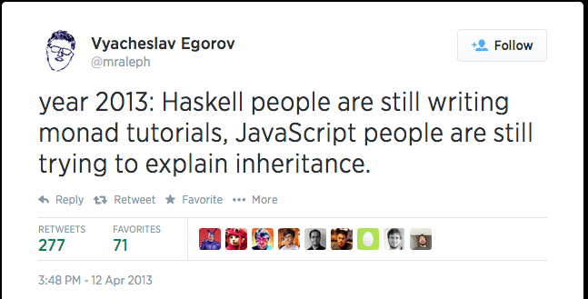

Object-Oriented CoffeeScript
Richard Clayton - DevOps/Fullstack Engineer
rclayton@bericotechnologies.com
http://rclayton.silvrback.com
http://www.gettingcirrius.com
 berico-rclayton,
rclayton
berico-rclayton,
rclayton
Goals
- Discuss Object-Oriented Programming (OOP) in JavaScript.
- Demonstrate how CoffeeScript simplifies using OOP.
About Me
- Chief Software Engineer, Berico Technologies
- Hobbies:
- Software (truly blessed to do what I love!)
- Traveling, especially to historic locales.
- Boogie Boarding
- Remodeling my house
- Whiskey, especially Scotch and Bourbon.
- Married with two precocious daughters (3 and 5)...
Programming Paradigms
A programming paradigm is a fundamental style of computer programming, a way of building the structure and elements of computer programs.
http://en.wikipedia.org/wiki/Programming_paradigm
Six Fundamental Paradigms
- Imperative
- Declaritve
- Functional
- Object-Oriented
- Logic
- Symbolic
http://en.wikipedia.org/wiki/Programming_paradigm
JavaScript is a hybrid
- Imperative
- Functional
- Object-Oriented
http://en.wikipedia.org/wiki/Comparison_of_multi-paradigm_programming_languages
Imperative
explicit statements that change a program state
Programmers describe how to do something:
document.getElementById("caption").style.width = '300px';Instead of describing the end state (declarative):
My Captionhttp://en.wikipedia.org/wiki/Comparison_of_multi-paradigm_programming_languages
Functional
uses evaluation of mathematical functions
and avoids state and mutable data
Behavior is described as functions:
function square(x){ return x * x; }State passed into the function remains unchanged:
var x = 5;
var y = square(x);
console.log(x); // 5
console.log(y); // 25
http://en.wikipedia.org/wiki/Comparison_of_multi-paradigm_programming_languages
Object-Oriented
uses data structures consisting of
data fields and methods together
Behavior is defined on the container:
var Car = function(){
var speed = 0;
this.accelerate = function(mph){
speed += mph;
};
};
Behavior of the container modifies state:
var car = new Car();
car.accelerate(10); // 10mph
car.accelerate(15); // 25mph
http://en.wikipedia.org/wiki/Comparison_of_multi-paradigm_programming_languages
Object-Oriented JavaScript
Confusing, underused, and underappreciated.
What's wrong with OO.js?
- No standard class declaration syntax.
- Unfamiliar inheritance model.
- Predominance of Object-based Functional Programming.
Unfamiliar inheritance model.
Prototypical Inheritance
- Objects inherit directly from other objects (even instances).
- Properties/functions are "resolved" through a prototype chain.
function Car(){
console.log("Vroom!");
this.move = function(){ console.log("Moving"); }
};
function Honda(){
console.log("Gas efficient, Vroom!");
};
Honda.prototype = Car;
var civic = new Honda();
civic.move(); // Resolved to Car
Object-Oriented CoffeeScript
Class Declaration
class Car
speed: 0
move: (mph) -> @speed += mph
var Car;
Car = (function() {
function Car() {}
Car.prototype.speed = 0;
Car.prototype.move = function(mph) {
return this.speed += mph;
};
return Car;
})();
Constructors
class Car
constructor: (name) ->
console.log "Created car named '#{name}'"
var Car;
Car = (function() {
function Car(name) {
console.log("Created car named '" + name + "'");
}
return Car;
})();
Automatic Property Declaration
class Car
constructor: (@name, @mpg) ->
console.log "Created car named '#{@name}' with #{@mpg} mpgs."
var Car;
Car = (function() {
function Car(name, mpg) {
this.name = name;
this.mpg = mpg;
console.log("Created car named '" + this.name
+ "' with " + this.mpg + " mpgs.");
}
return Car;
})();
Member visibility
class Clazz
hiddenVar = 10
publicVar: 10
hiddenMethod = -> console.log "Hidden!"
publicMethod: -> console.log "Public!"
var Clazz;
Clazz = (function() {
var hiddenMethod, hiddenVar;
function Clazz() {}
hiddenVar = 10;
Clazz.prototype.publicVar = 10;
hiddenMethod = function() {
return console.log("Hidden!");
};
Clazz.prototype.publicMethod = function() {
return console.log("Public!");
};
return Clazz;
})();
Hidden variables are actually global to all instances of the type for which they are defined!!!!
Class properties and methods
class Clazz
@CLASS_PROPERTY = 123
@CLASS_METHOD = -> console.log Clazz.CLASS_PROPERTY
Clazz.CLASS_METHOD()
var Clazz;
Clazz = (function() {
function Clazz() {}
Clazz.CLASS_PROPERTY = 123;
Clazz.CLASS_METHOD = function() {
return console.log(Clazz.CLASS_PROPERTY);
};
return Clazz;
})();
Clazz.CLASS_METHOD();
Inheritance
class Human
hitPoints = 10
receiveDamage: (dmg) ->
hitPoints -= dmg
class Knight extends Human
attack: (human) ->
human.receiveDamage 15
serf = new Human
knight1 = new Knight
knight1.attack serf
knight2 = new Knight
knight2.attack knight1
Inheritance, cont.
var Human, Knight, knight1, knight2, serf,
__hasProp = {}.hasOwnProperty,
__extends = function(child, parent) {
for (var key in parent) {
if (__hasProp.call(parent, key)) child[key] = parent[key];
}
function ctor() { this.constructor = child; }
ctor.prototype = parent.prototype;
child.prototype = new ctor();
child.__super__ = parent.prototype; return child;
};
Inheritance, cont.
Human = (function() {
var hitPoints;
function Human() {}
hitPoints = 10;
Human.prototype.receiveDamage = function(dmg) {
return hitPoints -= dmg;
};
return Human;
})();
Inheritance, cont.
Knight = (function(_super) {
__extends(Knight, _super);
function Knight() {
return Knight.__super__.constructor.apply(this, arguments);
}
Knight.prototype.attack = function(human) {
return human.receiveDamage(15);
};
return Knight;
})(Human);
serf = new Human;
knight1 = new Knight;
knight1.attack(serf);
knight2 = new Knight;
knight2.attack(knight1);
Calling the Parent's Constructor
class Car
constructor: (@topSpeed, @mpg) ->
class Honda extends Car
constructor: (topSpeed, mpg, @color) ->
super topSpeed, mpg
Car = (function() {
function Car(topSpeed, mpg) {
this.topSpeed = topSpeed;
this.mpg = mpg;
}
return Car;
})();
Honda = (function(_super) {
__extends(Honda, _super);
function Honda(topSpeed, mpg, color) {
this.color = color;
Honda.__super__.constructor.call(this, topSpeed, mpg);
}
return Honda;
})(Car);Calling Methods on Super Type
class Car
speed: 10
move: (mph) ->
@speed += mph
getSpeed: -> @speed
class Honda extends Car
move: (mph) ->
console.log "This little Honda's movin'!"
super mph
Honda = (function(_super) {
__extends(Honda, _super);
function Honda() {
return Honda.__super__.constructor.apply(this, arguments);
}
Honda.prototype.move = function(mph) {
console.log("This little Honda's movin'!");
return Honda.__super__.move.call(this, mph);
};
return Honda;
})(Car);
Protypical Assignment
class Car
speed: 10
move: (mph) ->
@speed += mph
Car::getSpeed -> @speed
var Car;
Car = (function() {
function Car() {}
Car.prototype.speed = 10;
Car.prototype.move = function(mph) {
return this.speed += mph;
};
return Car;
})();
Car.prototype.getSpeed(function() {
return this.speed;
});